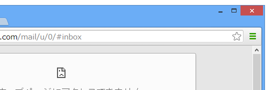
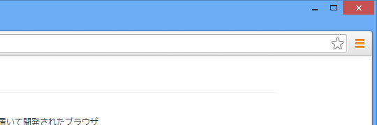
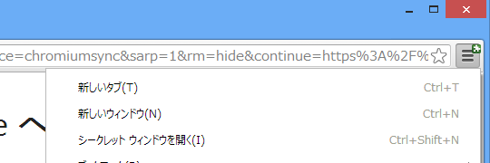

Google Chrome: 赤くなるのはいつだろう。
公開日：

「Google Chrome」本体にアップデートがあると［Google Chrome の設定］ボタンが青くなる*1というのを、Google Chrome を更新……が更新 - だるろぐ で紹介したのだけど、Google、プログラミング言語「Dart」初めてのベータ版をリリース - 窓の杜 で「Dartium」を試していて、このボタンが黄色くなる場合があることにも気付いた。

「Chronium 29」で確認*2。どうやらサードパーティアプリによって新しい拡張機能が（こっそり）ブラウザーへ追加されたことを示すようだ（Google Chrome 25：調整のための時間 - だるろぐ）。

ちなみに従来の表示はこんな感じだった。拡張機能のアイコンが小さく［Google Chrome の設定］ボタンの上に表示される。正直、これはちょっとわかりづらい。
だからなんだって感じなのだけど、こういう改善もあるんだなぁ、と。
ちなみに、「Google Chrome」本体のアップデートとサードパーティアプリによる拡張機能の追加がカブッた場合は、黄色が優先されるようだ。